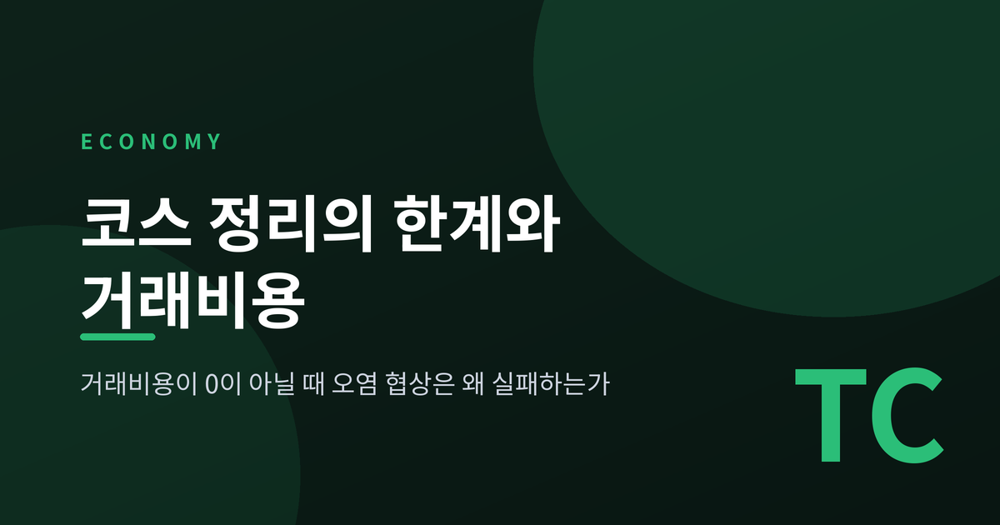
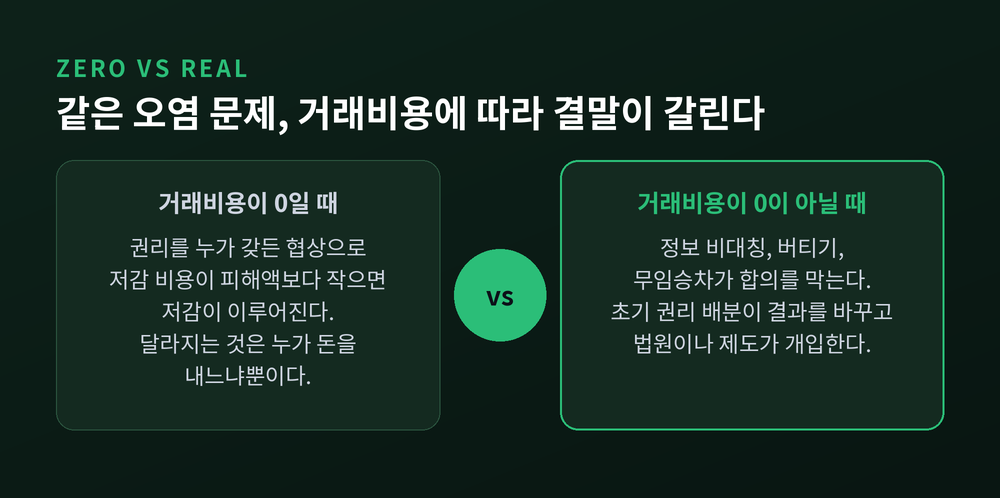
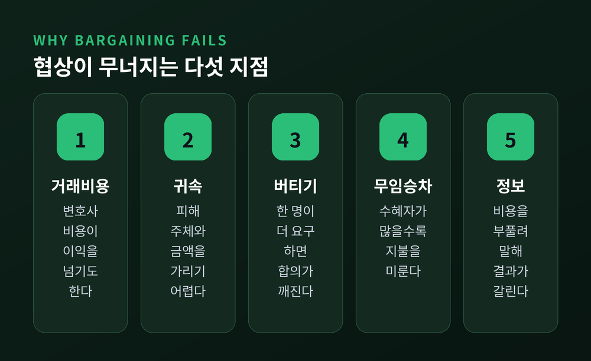
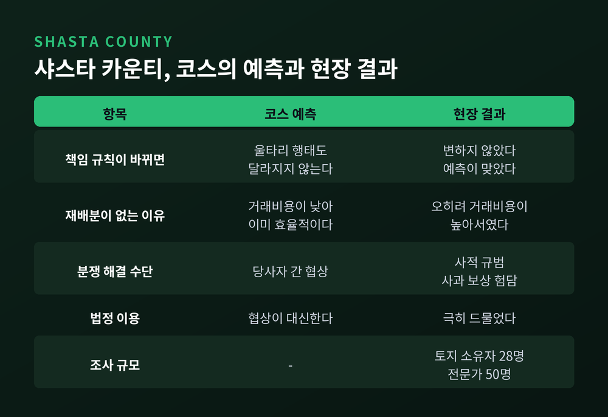
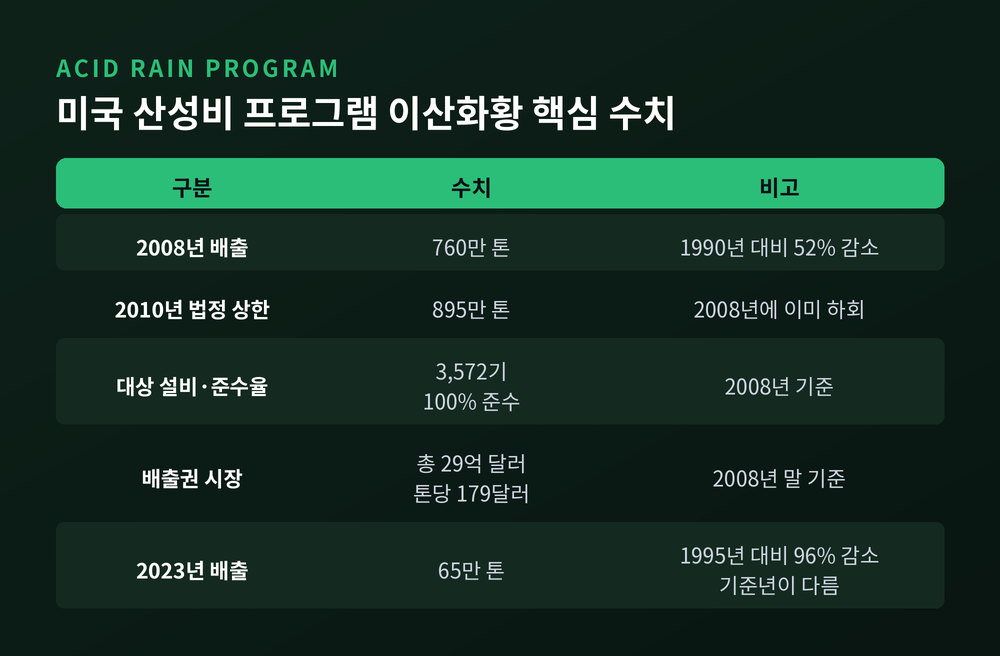
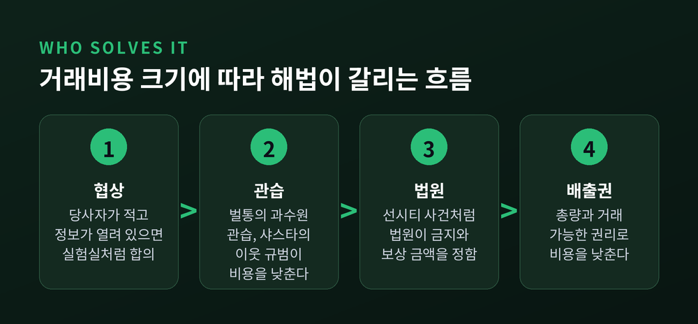

오늘은 코스 정리와 그 한계에 대해 이야기해 보려 합니다. 거래비용이 0이라면 당사자끼리의 협상만으로 오염 문제가 효율적으로 정리된다는 것이 정리의 내용입니다. 그러나 현실의 거래비용은 0이 아니고, 코스 본인도 이 점을 강조했습니다. 이 글은 정리가 정확히 무엇을 말하는지, 어디서 맞고 어디서 무너지는지를 실험과 판례, 정책 사례로 짚어 봅니다.
1991년 노벨위원회는 로널드 코스에게 상을 주며 "거래비용과 재산권이 갖는 의의를 발견하고 명확히 한 공로"라고 밝혔습니다. 위원회의 설명에 따르면 정리의 골자는 이렇습니다. 재산권이 명확하고 이전할 수 있으며 거래비용이 0이면, 자원 사용은 권리가 처음 누구에게 배분되었는지에 의존하지 않습니다.
공장 매연을 예로 들겠습니다. 공장에 오염할 권리가 있든 주민에게 맑은 공기를 누릴 권리가 있든, 저감 비용이 피해액보다 작다면 결국 저감이 이루어집니다. 권리가 공장에 있으면 주민이 돈을 내고 줄여 달라 하고, 주민에게 있으면 공장이 돈을 내고 오염할 권리를 삽니다. 누가 돈을 내느냐만 달라질 뿐입니다.

흔히 놓치는 사실이 하나 있습니다. '정리'라는 이름은 코스가 붙이지 않았습니다. 조지 스티글러가 1966년 교과서에서 완전경쟁 아래 사적 비용과 사회적 비용이 같아진다고 정식화하며 그렇게 불렀습니다. 노벨위원회조차 거래비용 0은 가상의 비교 기준일 뿐이라고 못박았습니다.
코스의 출발점은 오히려 '상호성'이었습니다. 연기 피해는 벽을 세운 사람과 불을 지핀 사람 양쪽이 함께 일으켰다는 것입니다. 1960년 논문 「사회적 비용의 문제」의 문장을 빌리면, 권리를 행사하는 비용은 언제나 다른 곳에서 발생하는 손실입니다. 공장을 막으면 공장 쪽이, 막지 않으면 주민 쪽이 손실을 입습니다. 누구를 악당으로 둘지가 아니라 어느 손실이 더 작은지가 질문이라는 뜻입니다.
이론이 현실에서 작동하는지 확인하려는 시도는 일찍부터 있었습니다. 엘리자베스 호프먼과 매슈 스피처는 1982년 『Journal of Law and Economics』에 「코스 정리: 몇 가지 실험적 검증」을 발표했습니다. 메데마와 저브가 정리한 바에 따르면 이 연구는 500회가 넘는 실험을 담았고, 집단은 1대1부터 1대19까지 다양했습니다.
결과는 인상적입니다. 효율적인 결과에 도달한 비율이 약 92%였습니다. 정보를 모두 공개한 경우 약 94%, 정보가 불완전한 경우에도 약 90%였습니다. 1987년 쿠르시, 호프먼, 스피처의 후속 실험에서는 40회 중 38회가 효율적으로 끝났습니다.
다만 해석에는 조심이 필요합니다. 스티븐 메데마는 학생 피험자의 실험실 결과를 실제 외부효과로 곧바로 옮길 수는 없다고 지적합니다. 슈왑의 노동계약 실험에서는 완전히 효율적인 계약이 약 20%에 그쳤습니다. 리처드 세일러의 실험도 흥미롭습니다. 현금과 맞바꿀 수 있는 토큰으로는 코스의 예측대로 거래가 이루어졌지만, 머그컵으로 하자 소유 효과 탓에 효율적 거래가 일어나지 않았습니다. 내 것을 내놓을 때는 더 많이 요구하게 되니, 처음 권리를 누구에게 주느냐가 결과를 바꾸는 셈입니다.
실험실 바깥에서 협상을 가로막는 요인은 문헌에서 반복해 확인됩니다.

첫째는 거래비용 자체입니다. 사회 규범과 어색함 때문에 두 사람 사이에서도 협상은 비쌉니다. 변호사 비용이 얻는 이익을 넘어서는 일도 있습니다.
둘째는 귀속 문제입니다. 피해를 누가 냈는지 가려내고 금액으로 환산하는 일부터 쉽지 않습니다.
셋째는 버티기입니다. 권리자가 많으면 마지막 한 사람이 더 많은 보상을 요구하며 합의를 무너뜨릴 수 있습니다. 넷째는 무임승차입니다. 혜택을 보는 사람이 많을수록 각자 지불을 미루려 합니다. 이 경우 법원 명령 같은 강제 참여만이 길이라는 논의가 있습니다.
다섯째는 정보 비대칭입니다. 불완전한 정보 아래에서는 비용과 편익을 부풀려 말할 유인이 생기고, 협상 결과가 하나로 정해지지 않고 넓은 범위에서 갈립니다. 덴마크의 한 사례에서는 수도 회사가 농가와 자발적 재배 협약을 협상했으나, 정보 우위를 쥔 농가가 과다한 보상을 요구해 협상이 길어졌습니다.
감정도 변수입니다. 파른스워스는 소음·냄새 분쟁 20건에서 판결 이후 당사자들이 협상한 경우가 한 건도 없었다고 보고했고, 협상 자체가 불공정하다는 분노가 이유의 일부였습니다. 규모가 커질수록 사정은 더 어렵습니다. 기후변화처럼 피해자가 수없이 많고 미래 세대까지 걸린 문제는 협상 테이블을 차리는 일부터 불가능합니다.
경제학자 제임스 미드는 1952년 사과 재배자가 벌이 주는 혜택을 가져가지 못하니 시장은 수분 서비스를 적게 공급할 것이라고 보았습니다. 보조금이나 정부 공급이 필요하다는 논리였습니다.
스티븐 청은 1973년 워싱턴주를 직접 조사했습니다. 시장은 이미 돌아가고 있었습니다. 명시적 계약이 없어도 '과수원의 관습'이라는 암묵적 규칙이 있었습니다. 이웃과 같은 밀도로 벌통을 두지 않으면 나쁜 이웃으로 찍힙니다. 평균 과수원은 50에이커를 조금 넘고, 벌은 1마일 이상 날아 경계를 넘나듭니다. 돈이 흐르는 방향도 작물을 따라 달랐습니다. 사과꽃에는 꿀이 적어 사과 재배자가 양봉가에게 값을 치르고, 오렌지꽃에는 꿀이 많아 플로리다에서는 양봉가가 과수원에 값을 치르는 것이 관행이었습니다.
관습이 거래비용을 낮게 유지해 준 덕분에 사적 협정이 가능했다는 해석입니다. 외부효과라고 해서 언제나 정부가 나서야 하는 것은 아닙니다.
로버트 엘릭슨은 캘리포니아 샤스타 카운티에서 목축업자와 농민의 소 침입 분쟁을 조사했습니다. 1982년 여름 중심으로 토지 소유자 28명(목축업자 11명, 농민 4명, 소규모 목장 소유자 13명)을 만났고, 전문가 50명의 의견도 들었습니다. 표본이 작고 무작위가 아니라는 점은 저자 스스로 인정합니다.

결과는 이중적이었습니다. 소 침입의 책임 규칙이 바뀌어도 울타리 설치 행태는 변하지 않았습니다. 법적 권리가 자원 사용을 바꾸지 않는다는 예측은 맞은 것입니다. 그러나 이유가 달랐습니다. 엘릭슨에 따르면 재배분이 일어나지 않는 이유는 거래비용이 낮아서가 아니라 높아서였고, 이웃들은 법이 아닌 사적 규범으로 문제를 풀었습니다. 소가 넘어오면 목장주가 사과하고, 데려가고, 재발을 막습니다. 피해가 크면 토마토밭 재식재를 거드는 식으로 보상합니다. 집행은 험담 같은 비공식 수단이 맡았고, 법정에 가는 일은 극히 드물었습니다.
정리하면 협상이 법을 대신한 것이 아니라 규범이 둘 다를 대신한 셈입니다. 긴밀한 공동체에서는 이것이 작동합니다. 그러나 모르는 사람끼리의 공해 분쟁에서까지 같은 방식을 기대하기는 어렵습니다.
1972년 애리조나 대법원의 스퍼 인더스트리 대 델 웹 사건은 거래비용이 협상을 막은 장면을 잘 보여 줍니다. 웹 사는 1959년 피닉스 서쪽의 농지 약 2만 에이커를 1,500만 달러에 사서 은퇴자 도시 선시티를 개발했습니다. 그 곁의 소 사육장은 소송 당시 2만~3만 두 규모로 커져 있었습니다. 웹은 1,300개가 넘는 필지가 악취와 파리 때문에 팔기 어렵다며 소송을 냈습니다.
법원은 사육장을 공중 방해로 보아 중지 명령을 인정했습니다. 흥미로운 대목은 그다음입니다. 사람들을 방해 시설로 불러들인 것은 웹이므로, 웹이 사육장의 이전·폐업 비용 중 합리적 부분을 보상하라고 판시했습니다. 해석은 필자의 것입니다만, 수많은 입주민과 사육장이 협상으로 풀기 어려우니 법원이 사실상 가격까지 정해 준 사례로 읽힙니다.
이런 선택을 체계화한 것이 1972년 칼라브레시와 멜라메드의 논문입니다. 권리를 지키는 방식을 재산 규칙(자발적 거래로만 이전), 책임 규칙(정해진 금액을 내면 가져갈 수 있음), 불양도 규칙으로 나눕니다. 공해 분쟁에는 권리를 누구에게 주고 금지명령으로 지킬지 손해배상으로 지킬지에 따라 네 가지 조합이 나옵니다.
협상이 어렵다면 거래비용을 낮추는 제도를 설계할 수 있습니다. 미국의 산성비 프로그램이 그 예입니다. 1990년 대기청정법 개정으로 만들어져 1995년 시행되었습니다. 총량 상한을 정하고 배출권을 거래하게 한 방식입니다.
EPA 발표로는 2008년 발전소 이산화황 배출이 760만 톤으로 1990년 대비 52% 줄었습니다. 2010년 법정 상한은 895만 톤이었고 이미 그 아래였습니다. 대상 설비 3,572기가 2008년 100% 준수했고, 배출권 시장 규모는 29억 달러, 평균 가격은 톤당 179달러였습니다. 가장 최근 자료인 2023년에는 이산화황이 연 65만 톤으로 1995년 대비 96% 줄었습니다. 두 수치는 기준년이 다르니 이어 붙여 읽으시면 안 됩니다.

여기서 선을 그어 둘 점이 있습니다. 이 성과는 코스 정리를 검증한 증거가 아닙니다. 당사자 협상이 아니라 정부가 총량과 권리를 정한 제도이기 때문입니다. 다만 권리를 명확히 하고 거래를 쉽게 만들어 거래비용을 낮췄다는 점에서, 코스의 문제의식을 정책으로 옮긴 사례로 읽을 수는 있습니다.
정리하면 이렇습니다.
코스 정리는 현실을 설명하는 법칙이라기보다 현실을 재는 자에 가깝습니다. 거래비용이 0인 세계를 기준점으로 삼아, 현실에서 무엇이 협상을 막는지 묻게 하기 때문입니다. 코스 본인도 거래비용 0 분석을 두고 거위 내장으로 미래를 점치는 일이라 깎아내린 적이 있습니다.
"정부가 해결하느냐, 시장이 해결하느냐"가 아니라 "어느 쪽의 거래비용이 더 작은가"를 묻는 것. 코스가 남긴 질문은 이것이었습니다.
벌통에서는 관습이, 샤스타에서는 이웃 규범이, 선시티에서는 법원이, 산성비에서는 배출권 시장이 각자의 자리에서 그 질문에 답했습니다. 다음에 공해 분쟁 기사를 접하신다면 누가 나쁜지보다 누가 어떤 비용 때문에 마주 앉지 못하는지를 먼저 살펴보시길 권합니다.
